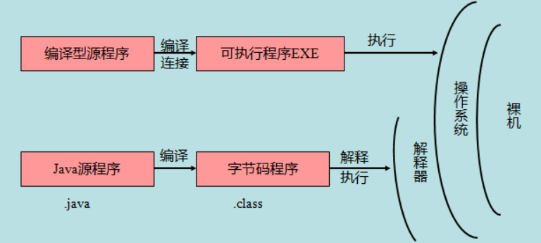

概念解释
JavaSE（Java Platform Standard Edition 标准版）
JavaSE是Java的基础，包括面向对象、多线程、IO等等基础知识
JavaEE（Java Platform，Enterprise Edition 企业版）
在JavaSE的基础上，提供 Web 服务、组件模型、管理和通信 API，可以用来实现企业级的面向服务体系结构（service-oriented architecture，SOA）和 Web 2.0 应用程序
JavaME（Java Platform，Micro Edition 微型版）
面向嵌入式等设备应用的开发
JVM：Java Virtual MachineJava虚拟机JDK：Java Development kitJava开发者工具JRE：Java Runtime EnvironmentJava运行时环境
JDK 安装
- 下载电脑对应版本的
JDK,下载地址：https://www.oracle.com/downloads - 安装
JDK - 配置环境变量
JAVA_HOME。在系统变量path中添加%JAVA_HOME%\bin;%JAVA_HOME%\jre\bin; - 使用
java -version测试
JDK 卸载
- 删除
JDK安装目录 - 删除环境变量
JAVA_HOME - 删除
path下关于Java的目录 - 使用
java -version测试
Hello World
- 编写
java文件1
2
3
4
5public class Hello {
public static void main(String[] args) {
System.out.print("hello world");
}
} javac.\Hello.java：使用javac编译 Java文件，生成.class文件java .\Hello运行
注意：Java大小写敏感；类名必须与文件名一致
Java 跨平台原理
- 编译之后会生成与平台无关的字节码文件
- 需要依赖不同平台的虚拟机（JVM）
Java 运行机制
计算机高级编程语言类型分为：
- 编译型
- 解释型
Java 是两种语言的结合（编译命令：javac.exe 解释命令：java.exe）
javac：负责编译部分，当执行javac时会启动Java的编译器程序。对指定扩展名的.java文件进行编译。 生成jvm可识别的字节码文件（.class文件）java：负责运行部分，会启动jvm加载运行时所需的类库，并对.class文件进行执行，文件要被执行必须要有起始点，这个起始点就是main函数
Java程序组成：
- Java源文件
- 字节码文件
- 机器码指令
编译型与解释型运行区别：

Java 基本语法
- Java 严格区分大小写
- 一个 Java 源文件（ .java ）里可以定义多个 Java 类，但其中最多只能有一个类被定义成 public 类；若源文件中包含 public 类定义，则该源文件的文件名必须与该 public 类的类名相同
- 一个源文件中包含 n 个 Java 类时，成功编译后会生成 n 份字节码文件（ .class），即每个类都会生成一份单独的 class 文件，且字节码文件名和其对应的类名相同
- 若一个类必须运行，则必须拥有 main 方法
基本数据类型
- 整数类型：
byte，short，int，long - 浮点数类型：
float，double - 字符类型：
char - 布尔类型：
boolean
计算机内存最小存储单元是字节（byte）即8个bit。一个字节是1byte，1024字节是1K，1024K是1M，1024M是1G，1024G是1T。
| 数据类型 | 占位（字节） | 数据范围 | 初始值 |
|---|---|---|---|
| byte | 1 | [-128~127] | 0 |
| short | 2 | [32768 ~ 32767] | 0 |
| int | 4 | [-2147483648 ~ 2147483647] | 0 |
| long | 8 | [-9223372036854775808 ~ 9223372036854775807] | 0L |
| float | 4 | [+/-3.4E+38F（6~7 个有效位）] | 0.0F |
| double | 8 | [+/-1.8E+308 (15 个有效位）] | 0.0D |
| char | 2 | ISO 单一字符集 | \u0000 表示空 |
| boolean | 1 | true 或 false | false |
1 |
|
数据类型转换
数据类型转换是在所赋值的数值类型和被变量接收的数据类型不一致时发生的，它需要从一种数据类型转换成另一种数据类型
自动类型转换
将取值范围小的类型自动提升为取值范围大的类型
char => int =>long=>float => double
byte => short=> int=> long => float =>double
精度低的类型自动转换为精度高的类型
1 |
|
有多种类型的数据混合运算时，系统自动将所有数据类型转换成容量最大的数据类型，然后再进行计算。byte、short和char之间不会相互自动转换，但可以进行计算，计算会转换为int类型，boolean类型不参与转换。
实心箭头表示无精度丢失的转换，虚箭头表示可能有精度损失的转换。
- 如果两个操作数中有一个是
double类型，另一个操作数就会转换为double - 如果其中一个操作数是
float类型，另一个操作数将会转换为float - 如果其中一个操作数是
long类型， 另一个操作数将会转换为long - 否则两个操作数都将被转换为
int
强制类型转换
将取值范围大的类型强制转换为取值范围小的类型
格式：
1 | 数据类型 变量名 = （数据类型）被转数据值; |
- 强转符号只针对最近的操作数有效，可以使用小括号提升优先级
char类型可以保存int的常量值，但不能保存int类型的变量值，所以需要强转byte、short和char之间进行计算会转换为int类型int强制转成short砍掉2个字节，可能造成数据丢失boolean类型不能做数据类型转换- 浮点转成整数，直接取消小数点，可能造成数据损失精度
1 |
|
注意：如果将一个数值强制转换为另一种类型而又超出了目标类型的表示范围，结果就会截断成一个完全不同的值。例如，（byte ) 300 的实际值为 44
包装类过渡类型转换
所谓包装类，就是可以直接将简单类型的变量表示为一个类，在执行变量类型的相互转换时，会大量使用这些包装类。Java共有六个包装类，分别是Boolean、Character、Integer、Long、Float和Double，分别对应于 boolean、char、int、long、float和double。而String和Date本身就是类。所以不存在什么包装类的概念。在进行简单数据类型之间的转换(自动转换或强制转换)时，总是可以利用包装类进行中间过渡。一般情况下，首先声明一个变量，然后生成一个对应的包装类，就可以利用包装类的各种方法进行类型转换
1 |
|
数组
按一定顺序排列的同类型数据的集合称为数组，引用类型
1 | public class Array { |
java.util.Arrays常用方法：
String toString(Object[] arr)：将 a 数组转换成一个字符串，括在方括号（“[]”）中，相邻元素用字符 ", "（逗号加空格）分隔void sort(Object[] a)：根据元素的自然顺序对指定对象数组按升序进行排序，数组中的所有元素都必须实现 Comparable 接口（对于原始数据类型，使用所谓双轴快速排序（Dual-Pivot QuickSort），对于对象数据类型，使用 TimSort）void sort(T[] a, Comparator<? super T> c)：根据指定比较器产生的顺序对指定对象数组进行排序void parallelSort(Object[] a)：以并发的方式对 a 数组的数组元素进行排序void setAll(T[] array, IntFunction<T> generator)：使用提供的函数计算每一个元素的值，对指定数组中的所有元素进行设置void parallelSetAll(T[] array, IntFunction<T> generator)：以并发的方式，使用提供的函数计算每一个元素的值，对指定数组中的所有元素进行设置type binarySearch(Object[] a, type key)：使用二分法査询 key 元素值在 a 数组中出现的索引，如果 a 数组不包含 key 元素值，则返回 -(low + 1)（调用该方法时要求数组中元素已经按升序排列）boolean equals(Object[] a, Object[] a2)：如果 a 数组和 a2 数组的长度相等，且 a 数组和 a2 数组的数组元素也一一相同，该方法将返回 trueObject[] copyOf(Object[] original, int newLength)：复制 original 数组，截取或用 0（数值类型）、false（布尔类型）或者 null（引用类型）填充，以使新数组的长度为 newLengthList<T> asList(T… a)：把一个引用类型的数组或指定个数的对象转换成固定长度的 List（Arrays.ArrayList），只能遍历访问该集合里的元素，不可增加、删除该集合里的元素，否则会引发UnsupportedOperationException异常
修饰符
访问权限修饰符
用于控制一个类的成员是否可以在其它类中访问，不能修饰局部变量

private（当前类访问权限）：在同一类内可见，只能被所属类访问- 包访问权限：不使用任何修饰符时，在同一包内可见
protected（子类访问权限）：对同一包内的任何其它类和不同包中的子类可见，不能修饰接口中的成员变量和成员方法（注意：在不同包中的子类只能通过该子类访问父类中protected成员，通过其它子类或父类都无法访问）public（公共访问权限）：对所有类可见
非访问修饰符
static用来创建类方法和类变量，类方法属于属于类的本身而不是类的实例final用来修饰类、方法和变量，final 修饰的类不能够被继承，修饰的方法不能被继承类重新定义，修饰的变量为常量，不可修改abstract用来创建抽象类、抽象方法synchronized修饰的方法、代码块在同一时间只能被一个线程访问，不能修饰构造器、成员变量等volatile修饰的成员变量在每次被线程访问时，都强迫从共享内存中重读该成员变量的值；并且当成员变量发生变化时，强迫线程将变化值回写到共享内存（保证线程操作时变量的可见性，即一个线程修改了某个变量的值，这新值对其它线程来说是立即可见的）（只能保证内存可见性，无法保证操作的原子性）transient序列化的对象包含被 transient 修饰的实例变量时，JVM 跳过该特定的变量native修饰的方法通常采用 C/C++ 语言来实现
volatile 实现原理
- 如果对声明了
volatile变量进行写操作，JVM 就会向处理器发送一条Lock前缀的指令，将这个变量所在缓存行的数据写回到内存，这个写回内存的操作会引起在其它 CPU 里缓存了该内存地址的数据无效- 缓存一致性协议（如 Intel 的 MESI 协议）：每个处理器通过嗅探在总线上传播的数据来检查自己缓存的值是不是过期了，当处理器发现自己缓存行对应的内存地址被修改，就会将当前处理器的缓存行设置成无效状态，当处理器要对这个数据进行修改操作的时候，会强制重新从系统内存里把数据读到处理器缓存里
final 修饰符
final 修饰类
- 表示最终的类，不可被继承的类
final修饰的类有很多，比如八大基本数据类型包装类和 String 类，也是不可变类（当创建它们的实例后，其实例的实例变量不可改变）
final 修饰方法
- 最终的方法，该方法子类可以调用，但不允许被子类覆盖
- 构造方法不能使用
final修饰
final 修饰变量
- 最终的变量，常量，该变量只能被赋值一次
final修饰的成员变量必须显式指定初始值（定义时、初始化块或构造器中指定），系统不会为 final 字段初始化；静态常量的单词全部大写，单词间使用下划线隔开 示例：final int MAX_VALUE = …;final是唯一可以修饰局部变量的修饰符final修饰基本类型的变量，表示该变量不能被重新赋值final修饰引用类型的变量，表示该变量所引用的地址不能变，而所引用对象的内容可以改变- 可执行“宏替换”的 final 变量：当定义 final 变量时就为该变量指定了初始值，编译器会把程序中所有用到该变量的地方直接替换成该变量的值（在编译阶段能确定的内容只能来自于常量池中）